現場に伺って撮る採用の動画と、AIで作る商品のショートドラマ。企業の縦型動画を、企画から制作・投稿・運用まで一式でお引き受けします。
ロゴに添えた言葉は「ひとつだけの物語を、あなたに」。人生の節目に立ち会い、その表情を残してきた私たちが、企業の映像でも大切にしていることです。
その会社にしかない物語を、
伝わる映像にして、届け続ける。
働く人の顔、商品が使われる場面。説明より先に、見た人の心が動く映像をつくり、一度きりで終わらせず出し続けます。
出会うべき人と、
ちゃんと出会える世の中へ。
いい職場と、そこで働きたい人。いい商品と、それを必要とする人。魅力が伝わらないせいで起きるすれ違いを、映像で減らしていきます。
撮影と編集を自分たちの手でやっている会社です。画づくりは机上ではなく、人の表情を撮り続けてきた現場の経験から来ています。
投稿したあとの振り返りや、応募・問い合わせへの返信。手が抜かれやすいところまで、精度を上げて仕上げます。
AIと仕組みで手間を減らし、無理なく出し続けられる体制をつくります。数字は先に約束せず、実測でお伝えします。
どちらも、企画・制作・投稿・振り返りまでを一式お引き受けします。まず御社のサイトを拝見して、企画案を作るところから始めます。
当社のカメラマンが職場に伺って撮影し、実際に働く方が出演する縦型のショート動画を作ります。InstagramやTikTokで発信を続け、見た人が公式LINEや求人ページからそのまま応募できるところまで整えます。
商品やサービスを「必要とする人の物語」として、縦型のショートドラマにします。出演者の手配や撮影は不要。台本は人が考え、人物と場面はAIで、商品は実物の素材で正確に見せます。
求人を出しても応募が来ない。来ても、面接に来ない、続かない。その理由のひとつは、どんな人とどんな場所で働くのかが、応募する前に見えないことです。働く人の姿をそのまま撮って、応募のきっかけになる動画を出し続けます。
仕事の1日の流れ、先輩社員の一言、現場の道具や車両、休憩中の雰囲気、社長からのメッセージなど。
撮影日の現場へのご案内と、出演する方の調整だけです。企画・編集・投稿・応募への返信は当社が行います。
※ Indeedなど求人媒体の運用もあわせてご相談いただけます。応募数などの成果を事前にお約束することはしていません。
説明を読ませるのではなく、見る人の暮らしの一場面から始めて、最後に商品へつなげます。下の2本は、当社の作り方を見ていただくために架空の商品で制作したサンプルです。
「またいつもの夕飯」という退屈から始めて、ひとふりで表情が変わるまで。商品の説明は一切せず、使ったあとの顔で違いを伝える構成です。
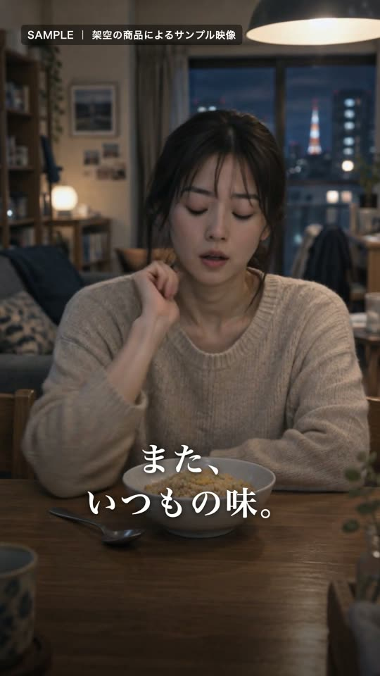
0秒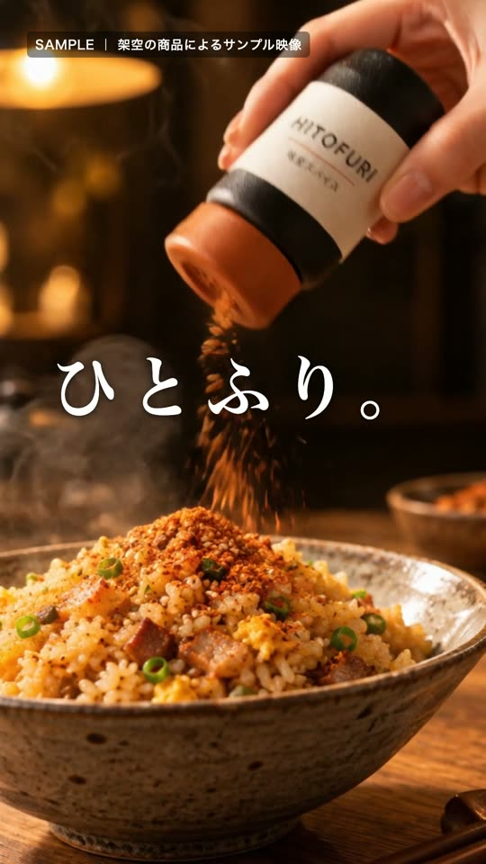
4秒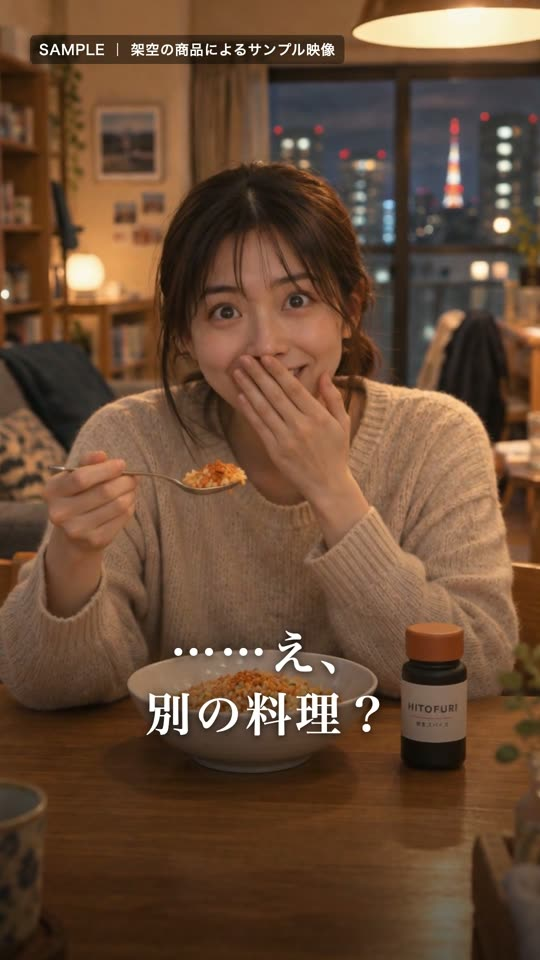
8秒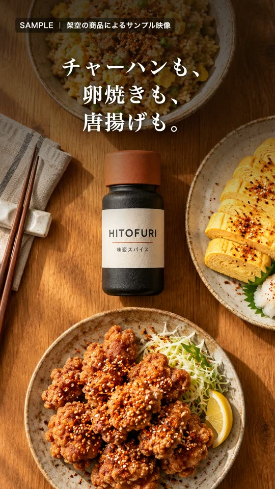
12秒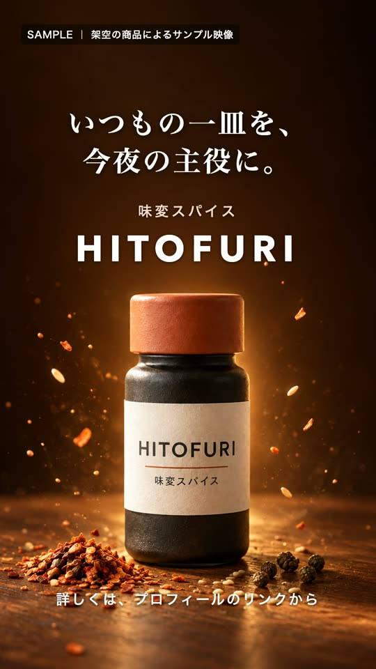
16秒指輪そのものではなく、ふたりの朝や帰り道の手元から始めます。「特別な日より、なんでもない日のほうがずっと多い」という一言で、毎日つける指輪の価値を伝える構成です。
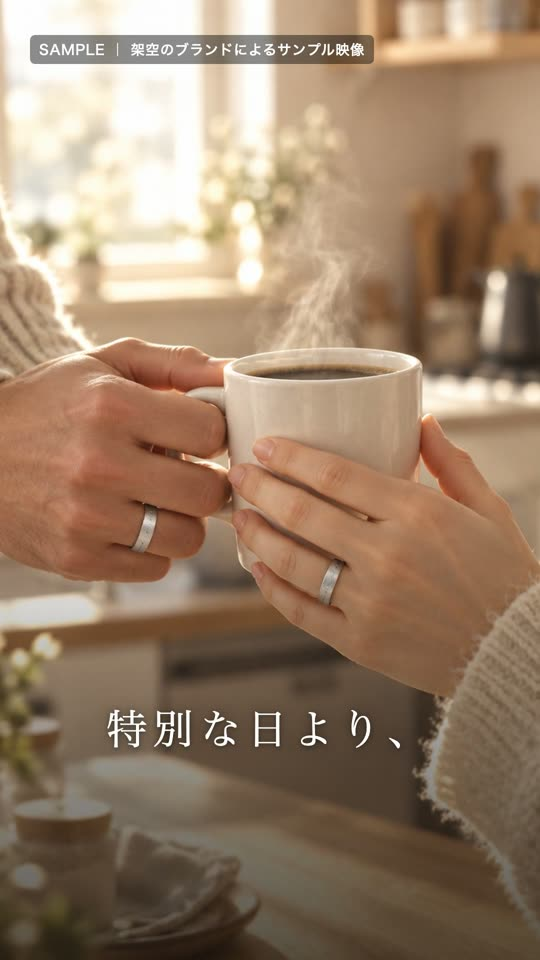
0秒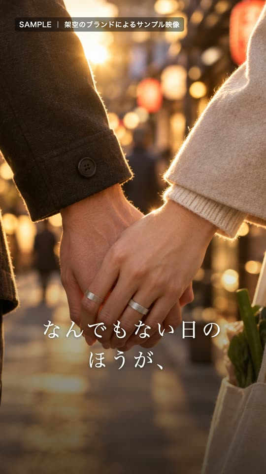
4秒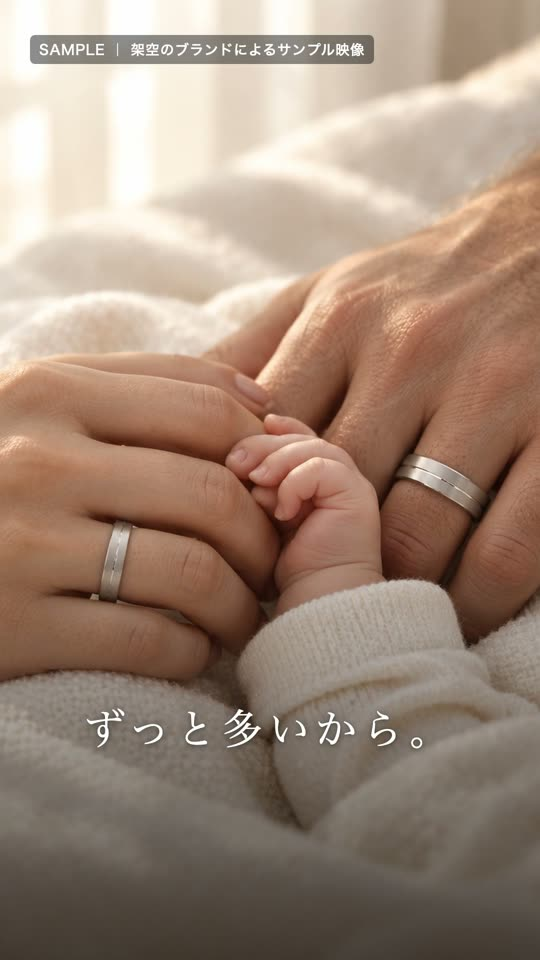
8秒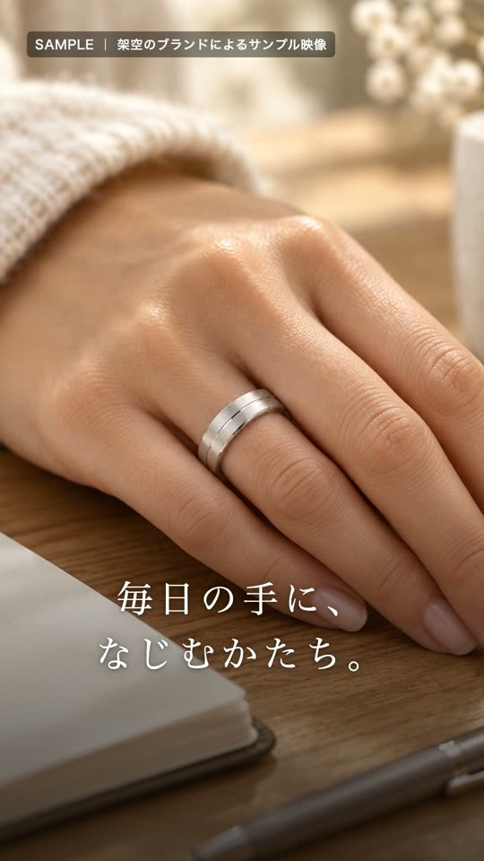
12秒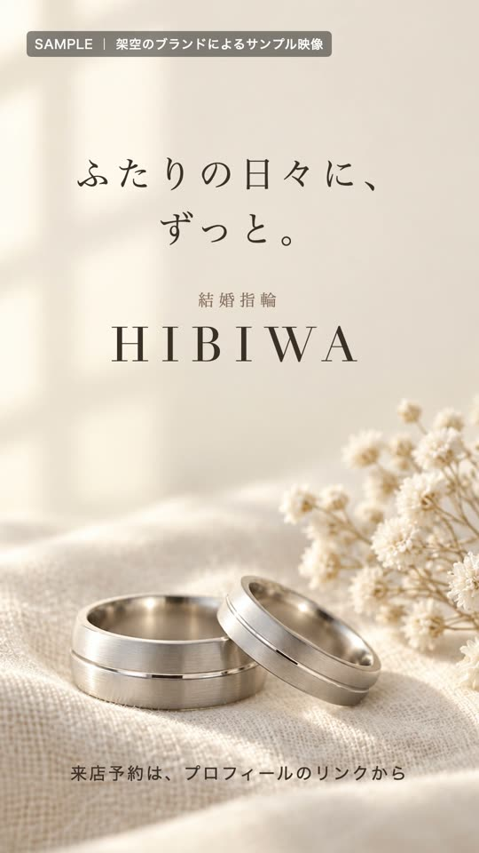
16秒※ 2本とも架空の商品・ブランドで、人物・場面・商品をAIで制作したサンプルです。実際のご依頼では、商品は御社の実物の写真・映像を使います。
台本と構成は人が考え、商品は実物の素材で見せます。AIは「撮影しなくても場面が作れる」部分にだけ使い、最後は必ず人が見てから納品します。
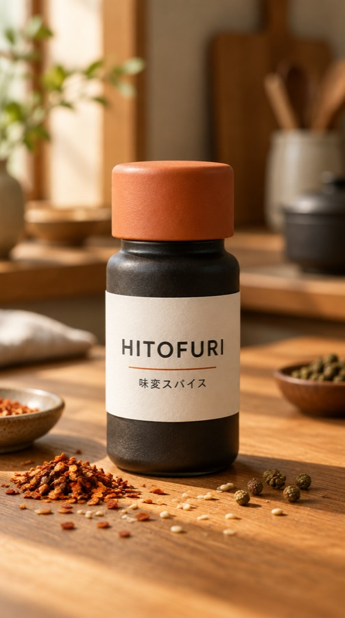
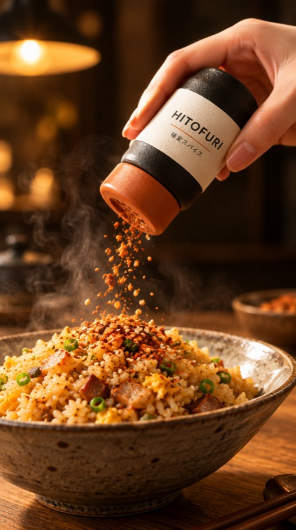
企画・台本・構成、商品の見せ方、テロップの言葉選び、最終確認、運用の振り返り。
人物と場面の画像づくり、場面の動画化。出演者の手配やロケ撮影が要らない分、本数を出し続けられます。
いきなりお見積もりではなく、御社向けの企画案を先にお作りします。ここまで費用はかかりません。
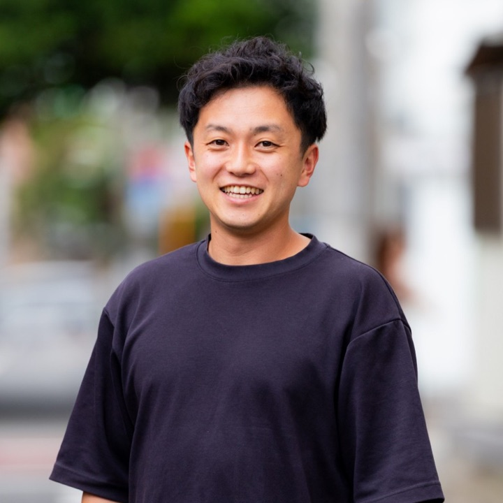
撮られるのが苦手な人ほど、
いい表情が撮れる。
写真と映像の撮影を長く続けてきました。人生の節目に立ち会い、その日の表情を残すことが、私たちの仕事の原点です。
撮影と映像編集を一貫して手がけるうちに、企業のお客様から「伝わる動画を、出し続けたい」というご相談をいただくようになりました。いまは、現場で撮る人材採用のSNS運用や、AIで作る商品のショートドラマまで、映像の会社だからできる形でお手伝いしています。
関連会社の株式会社ヒロメルでは、公式LINEのAI応対や営業メールの自動化など、業務のAI化を担当しています。
| 会社名 | 株式会社SOI（2025年9月に合同会社Authenticより商号変更） |
|---|---|
| 代表取締役 | 玉手 志弥（たまて ゆきや） |
| 所在地 | 〒142-0041 東京都品川区戸越5-18-16-2F |
| 事業内容 | 人材採用のSNS運用（撮影・編集・投稿・公式LINE運用） AIショートドラマの制作・運用 |
| 関連会社 | 株式会社ヒロメル（AIによる業務自動化） |
| お問い合わせ | soiwedding2025@gmail.com |
御社のサイトを拝見して、採用のSNS運用やショートドラマの企画案を先にお作りします。費用はかかりません。会社名と気になっているサービスだけお送りください。
メールで相談する soiwedding2025@gmail.com